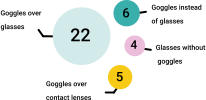
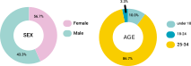
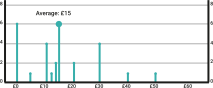
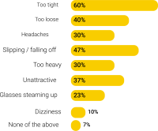

HOW PEOPLE USE GOGGLES

WHERE ARE GOGGLES USED

Amount users are willing to pay

CONTACT LENSES
Advantages
• Fewer obstructions
• Easier to wear with safety goggles
Issues
• Require daily care and cleaning
• Cost varies on quality
• Can cause eye infections
GLASSES WITH EYE SHIELDS
Advantages
• Look like regular glasses
• Lenses strengthened specifically
Issues
• Side shields are not removable
• Limited style and size options
• Very expensive
INSIGHTS FROM INTERVIEWS
• Price dissuades students from buying other solutions.
• Issues including headaches and dizziness from using goggles over
glasses negatively effect users safety in labs.
• Users want a customisable solution to fit with their own glasses
which they are more used to.
• Appearance is not trivial, even when wearing goggles in a lab
environment only.
• Users prioritise comfort over safety and remove safety goggles
when working in labs.
• The amount they are willing to pay depends on the duration spent
in labs.
FROM INTERVIEWING 7 PEOPLE AND CONDUCTING A SURVEY WITH 30 RESPONSES
WE WERE ABLE TO ANALYSE USERS’ OPINIONS OF CURRENT SOLUTIONS

HOW MIGHT WE
• How might we design a solution that complies with safety standards
and has longevity?
• How might we design an aesthetically pleasing solution that
enables custom sizing and form fitting for a variety of users?
• How might we create an affordable solution, so that even
short-term users are willing to purchase it and use it as a more
appropriate solution?
• The amount they are willing to pay depends on the duration spent
in labs.